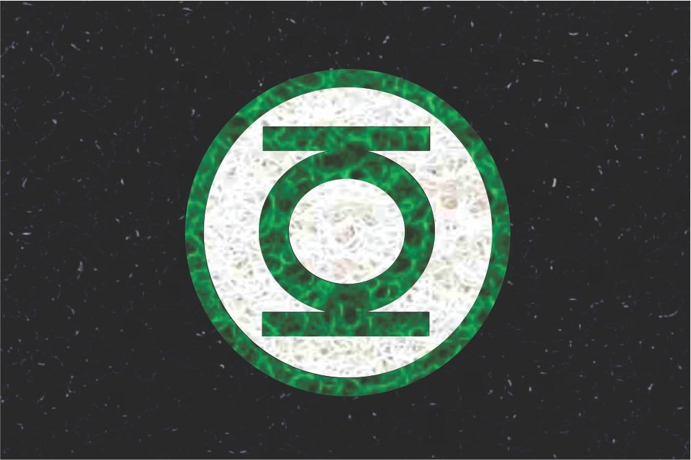

- Aqui estão os projetos relacionados à Matemática.
Projeto de Matvar
Projeto de Matemática da Variação.

Modelagem
Nesse projeto precisávamos modelar um modelo de corpo livre, para isso primeiro precisávamos escolher um modelo, que no caso era sobre um trajeto de um foguete. Descobrimos as equações diferenciais e colocamos no python para fazer uma simulação, por fim pesquisamos para a validação e fizemos nossas conclusões.
CieDados
- A análise em questão teve como tema a criação de um classificador que filtrasse informações de acordo com sua relevância á empresas, com foco em bases de dados retiradas de redes sociais onde temas quaisquer podem ser análisados com base em feedbacks de usuários postados e utilizando palavras chaves como mecanismo.